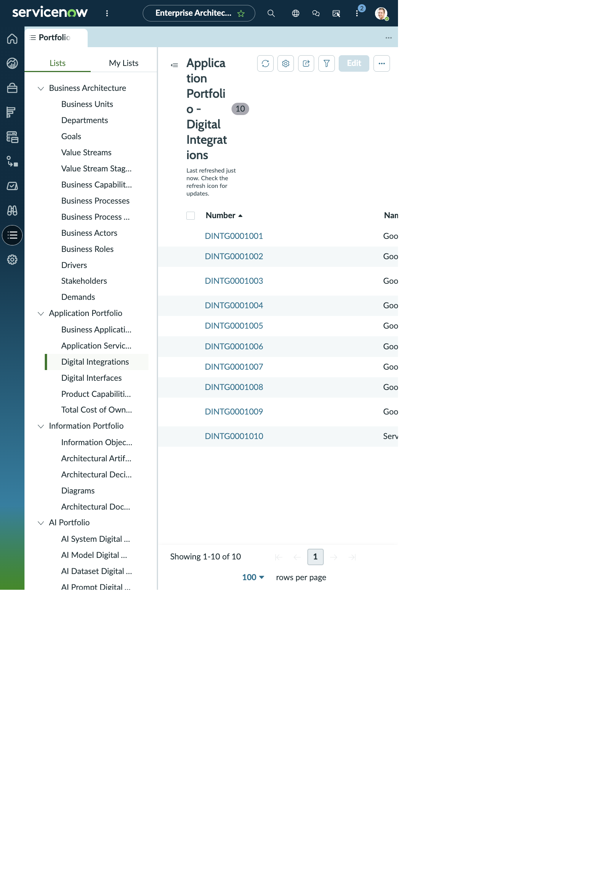

ENTERPRISE ARCHITECTURE WORKSPACE · DIGITAL INTEGRATIONS
Goodday ServiceNow Event Management telemetry
This is the integration record opened from the Digital Integrations list. The subscriber’s application programming interface adapter, credential metadata, and information-object links are shown below as full-width record sections.
DIGITAL INTEGRATION
DINTG0001007 · integration record
- Name
- Goodday ServiceNow Event Management telemetry
- Number
- DINTG0001007
- Subscriber Digital Interface
- Goodday ServiceNow application programming interface adapter
- Subscriber Business Application
- Goodday Family Chores
- Provider Digital Interface
- ServiceNow Platform application programming interfaces
- Provider Business Application
- ServiceNow Platform
- Subscriber company
- (empty)
- Type / subtype
- Data Integration / Events
- Version
- 1.0
- Life cycle stage / status
- (empty) / (empty)
- Business unit
- (empty)
- Data flow direction
- Incoming: Subscriber to Provider
- Initiating application
- Subscriber
- Trigger / interval
- Scheduled / Minutes
- Response
- Synchronous
- Interaction type
- Push
- Middleware
- (empty)
- Business criticality
- Medium
- Confidentiality / integrity / availability
- Low / High / High
- Business owner
- Alex Morgan
- IT owner
- Jamie Chen
- Support group
- Goodday Application Operations
- Supported by
- (empty)
SUBSCRIBER DIGITAL INTERFACE
Goodday ServiceNow application programming interface adapter
- Name
- Goodday ServiceNow application programming interface adapter
- Provider business application
- Goodday Family Chores
- Interface type
- Internal application programming interface
- Protocol / message format
- Hypertext Transfer Protocol Secure / JavaScript Object Notation
- Authentication / authorization
- Other / Open Authorization 2.0 token
- Provider company
- (empty)
- Parent
- (empty)
- Version
- (empty)
- Life cycle stage / status
- (empty) / (empty)
- Model ID
- (empty)
- Business owner / IT owner
- (empty) / (empty)
- Support group / supported by
- (empty) / (empty)
| Number | Integration | Provider interface | Type | Trigger | Interval |
|---|---|---|---|---|---|
| DINTG0001007 | Goodday ServiceNow Event Management telemetry | ServiceNow Platform application programming interfaces | Data Integration | Scheduled | Minutes |
| DINTG0001008 | Goodday feedback and Agile story lifecycle | ServiceNow Platform application programming interfaces | Process Integration | Process Driven | On Demand |
CREDENTIALS RELATED LIST
CRED01007 · metadata only
- Credential
- ServiceNow Open Authorization 2.0 client-credentials pair
- Digital interface
- Goodday ServiceNow application programming interface adapter
- Digital integration
- Goodday ServiceNow Event Management telemetry
- Environment
- Development
- Authentication type
- Token-based authentication
- Authorization type
- Open Authorization 2.0 token
- Managed by group
- (empty)
- Life cycle stage / status
- (empty) / (empty)
- Integration user
- (empty)
- Connection and credential alias
- (empty)
- Credential store URL
- (empty)
- Number
- CRED01007
INFORMATION OBJECTS
Data domains linked to the interface
| Relationship record | Information Object | Active from / until | Create / retrieve / update / delete |
|---|---|---|---|
| DINTFIO01036 | Operational Event Telemetry | (empty) / (empty) | (empty) / (empty) / (empty) / (empty) |
| DINTFIO01037 | Feedback and Diagnostic Evidence | (empty) / (empty) | (empty) / (empty) / (empty) / (empty) |
The integration itself also relates to Operational Event Telemetry. No related application programming interface record appeared in this captured view. The credential list had CRED01007 for this telemetry integration and CRED01008 for the feedback and stories integration.
WORKSPACE VISUALS
Digital Integrations workspace list
See the working view in context. The record details above remain available here as readable HTML.
